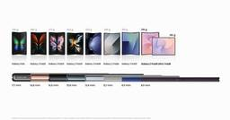
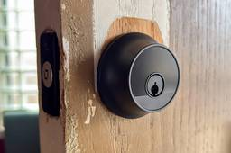

ギズモード・ジャパン
https://www.gizmodo.jp
日本最大のテクノロジー＆ガジェット専門メディア。YouTubeや記事を通じて、最新ガジェットの偏愛レビューから、AI／サイエンスの深掘りコンテンツまで幅広く発信しています。「みんなで探求する」を合言葉に、刺激的な未来の体験をシェアします。
フィード
テック業界の大物たちは映画の中では悪役ばかり？ 今秋公開4作品をチェック
ギズモード・ジャパン
映画に登場する悪役には、悪の道に至るまでのバックストーリーや同情するような境遇があり、複雑で味わい深いキャラクターであることがほとんどです。一方で、今秋公開予定のいくつか映画に出てくる悪役は、本当に共感できない悪役、つまりテック業界の大物た…
2時間前
「AIを支配しているのは一握りの人たち」国連人権トップが警鐘
ギズモード・ジャパン
国連人権トップがAI業界の権力集中と存続の危機に警鐘を鳴らす。手遅れになる前に必要な安全性確保と自律型兵器禁止への動きを解説します。
3時間前
iPhone 18 Pro、iPhone Duoのau、楽天、ソフトバンク、ドコモでの本体価格・キャンペーンまとめ（9/13更新）
ギズモード・ジャパン
iPhone 18 Proおよび折りたたみモデルiPhone Duoの発売日、予約方法、au・楽天・ソフトバンク・ドコモのキャリア価格やキャンペーン情報を随時更新でお届けします。
10時間前
銀河の中心にいないはぐれ者ブラックホール、星を「つまみ食い」する姿を見られてしまう
ギズモード・ジャパン
2025年5月14日の記事を編集して再掲載しています。ブラックホールがふたつってこと…？地球から約6億光年離れた銀河で、星を｢つまみ食い｣している超大質量ブラックホールが発見されました。驚くべきことに、このブラックホールは、巨大なブラックホ…
11時間前
iPhoneの寿命を3年延ばす方法。コストは買い替えの1/16
ギズモード・ジャパン
今のiPhoneをもう何年か使いたい。そんな風に思っているなら、Apple Storeでできる「アレ」がおすすめです。
11時間前

五度見した。ソフトバンクはiPhone 18 Proが26万8560円。でも、MNPなら実質5万6760円から！ 1
1
ギズモード・ジャパン
ソフトバンクのiPhone 18 Pro価格が発表！一括26万8560円のところ、MNPなら「新トクするサポート＋」適用で実質5万5760円から購入可能です。条件や予約方法を確認しよう。
12時間前
Asus初のゲーミングサウンドバー、ユーザーの反応は？
ギズモード・ジャパン
ゲーマーって欲深いですよね。もっと面白いゲームを、もっと快適に、もっとパフォーマンスを上げて、もっと上手くプレイしたい。その熱意は非常に高く、ゲーマー自身が自分の心も体も捧げる一方で、ゲーム開発者、ゲーム機開発者、周辺機器開発者に向けられる…
13時間前
「VAIO Z」の再来か。「VAIO T」に変形ノートPCマニアの俺が泣いた
ギズモード・ジャパン
往年の名機が復活！3段変形する新型ノートPC「VAIO T」の魅力と「Surface Laptop Studio」との比較を徹底解説。気になるスペックや発売日情報をお届けします。
14時間前
2年で実質6万6900円。auのiPhone 18 Proは26万8800円から
ギズモード・ジャパン
auのiPhone 18 Pro価格が発表！「スマホトクするプログラム＋」の活用で2年実質6万6900円から購入できるお得な割引施策や条件を分かりやすく解説します。
14時間前
楽天モバイルのiPhone 18 Proは25万5900円から。2年返却なら実質8万7944円です
ギズモード・ジャパン
楽天モバイルのiPhone 18 Pro価格を徹底解説！一括価格から2年返却プログラムを利用した実質8万7944円のお得な購入方法まで分かりやすく紹介します。
14時間前
塚本晋也監督が語る、戦争を描き続ける理由。『ネルソンさん、あなたは人を殺しましたか？』 2
ギズモード・ジャパン
劇場デビュー作『鉄男』（1989）で映画界に激震を走らせて以来、世界中の熱狂的なファンを魅了し続けてきた塚本晋也監督の最新作『ネルソンさん、あなたは人を殺しましたか？』が公開された。近年は『野火』（2014）、『斬、』（2018）、『ほかげ…
15時間前
【残りあと2日】左右分割キーボード「Orca echo」、実はスマホとも相性バツグン！
ギズモード・ジャパン
このセットアップ、アリです！ギズモード×キークロンのタッグで鋭意制作中の左右分割キーボード、「Orca echo（オルカ エコー）」。現在CoSTORY先行販売は残り2日で終了となります。クラファンでは「早割」として、最大10％割引価格にな…
15時間前
足ムレ解消。温風も涼風も出るフットレストは一年中使いたい
ギズモード・ジャパン
温風と涼風で1年中快適な山善のフットレスト「足もと ホット＆クール」。出しっぱなしOKで季節の家電出し入れの手間を解消する便利な特徴を紹介します。
16時間前
新型AirPods 5を前世代AirPods 4と比較。進化はノイキャンだけじゃない
ギズモード・ジャパン
新型AirPods 5と前世代AirPods 4を徹底比較！ANC性能の50%向上や音質、バッテリー持ち、新機能の違いを分かりやすく解説します。
17時間前

7年かけて厚さは約半分に。Samsungの折りたたみスマホにかけるアツい情熱
ギズモード・ジャパン
たゆまぬエンジニアリングの積み重ねが、折りたたみへ繋がる。Samsungが、Galaxy Z Foldシリーズの薄型・軽量化を支えてきた技術を解説する記事を公式Newsroomで公開しました。それも、iPhone Duoが登場した翌日に！題…
17時間前
iPhone Duoを快適に使う鍵はApple Watchかも？ 1
ギズモード・ジャパン
Touch IDに不安がある方へ。先日発表されたiPhone Duoにはおなじみの顔認証「Face ID」が無く、生体認証はiPadなどで使われている指紋認証のTouch IDとなっています。そのため、画面を見るだけでロック解除。というスム…
19時間前
自炊歴30年の私が今もっとも愛用している「調理道具」。調理効率が爆上がりした理由は…… 1
ギズモード・ジャパン
ROOMIE 2026年7月13日掲載の記事より転載自炊を初めて早30年。仕事柄、調理器具をアレコレ使って試すのが大好きな私。今一番ヘビロテしている調理道具をご紹介します！1台7役をこなすマルチパン手頃な価格で、使い勝手の良い調理器具が揃う…
19時間前
Apple Watch Series 12、メモリ倍になってるらしいぞ！
ギズモード・ジャパン
長〜く使える相棒になりそう。先日のAppleイベントで発表されたApple Watch Series 12とApple Watch Ultra 4。センサー性能が60倍とかよーわからんレベルで強化されたり、自動文字起こしなどのAI機能が追加…
1日前

これスマホで開くの？ 見た目がクラシカルなスマートロック「Level Lock Pro」レビュー
ギズモード・ジャパン
2026年4月2日の記事を編集して再掲載しています。一見どこにでもある普通の鍵穴。でもこれ、スマホで操作できる立派なスマートロックなんです。 名前は「Level Lock Pro」と言って、「Level Lock」の上位機種。ターゲット顧客…
1日前
空には太陽を。口元には微笑みを。キーボードには角度を。その下には収納を
ギズモード・ジャパン
キーボードスタンドと収納ボックスが一体化した2in1オーガナイザーをご紹介。デスクの隙間を有効活用し、入力のしやすさとスッキリとした作業環境を同時に手に入れませんか。
1日前